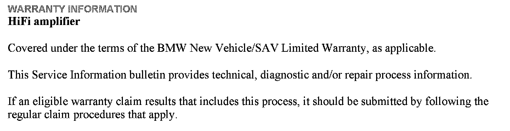
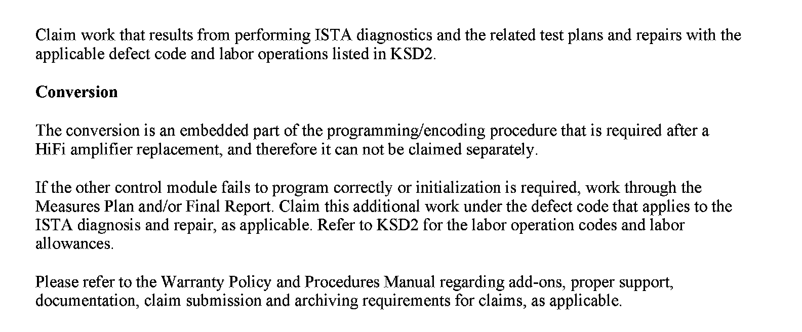

Audio System - Replacement Amplifier Not Recognized
SI B65 12 11Audio, Navigation, Monitors, Alarms, SRS
February 2012
Technical Service
This Service Information bulletin supersedes SI B65 12 11 dated July 2011.
[NEW] designates changes to this revision
SUBJECT
Replacement HiFi Amplifier Is Not Recognized by ISTA and ISTA/P
MODEL
All produced between 09/2005 and 08/2010 with option 676 (HiFi Loudspeaker System)
SITUATION
The replacement HiFi amplifier is not recognized by the diagnosis tool ISTA (Integrated Service Technical Application) and the part number is not accepted by the programming and coding tool ISTA/P (Integrated Service Technical Application Programming).
This new-style HiFi amplifier:
^ Is no longer displayed in the control unit list;
^ Cannot be diagnosed; and
^ Cannot be programmed or coded.
CAUSE
This new-style HiFi amplifier (introduced into series production in 09/2010) no longer has a bus connection for diagnosis, programming and coding.
[NEW] INFORMATION
When installing the new style HiFi amplifier (replacement part), the following conversion must be performed in ISTA/P:
^ Conversion replacement HiFi loudspeaker system
Note:
This conversion option is only available in ISTA/P prior to the first new style HiFi amplifier installation in the affected vehicle.


WARRANTY INFORMATION